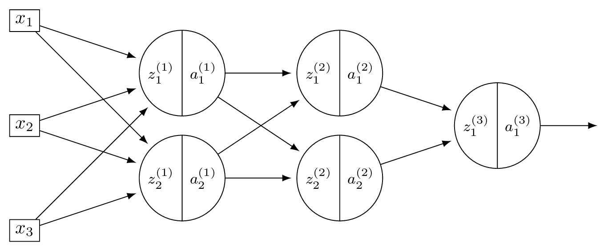
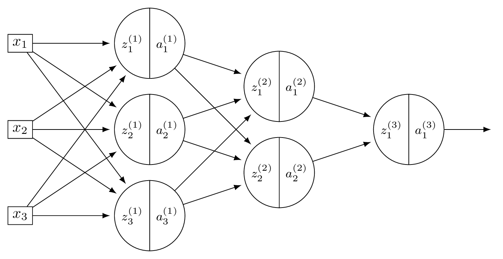
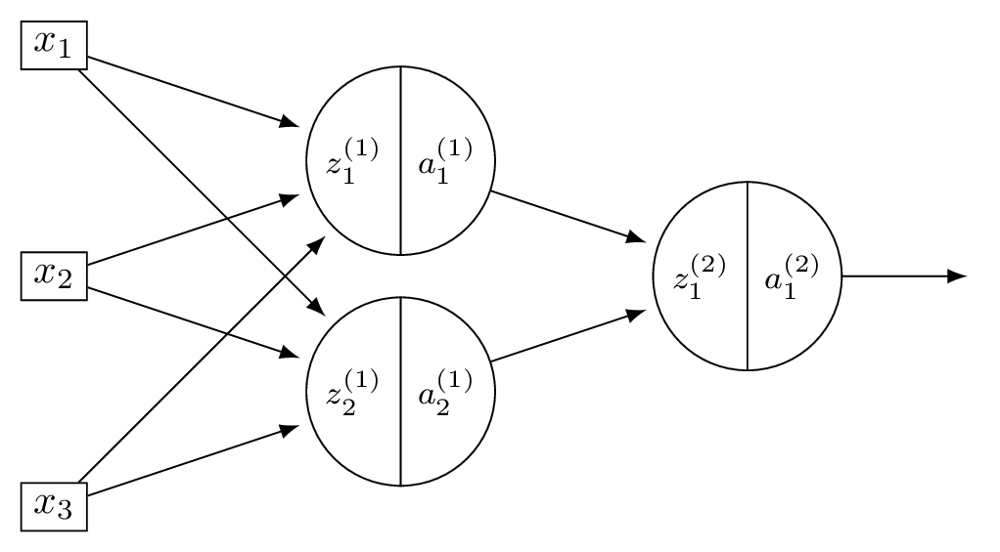
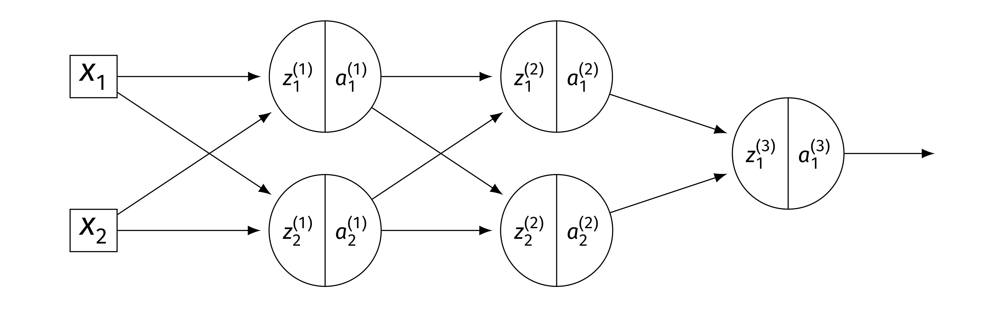
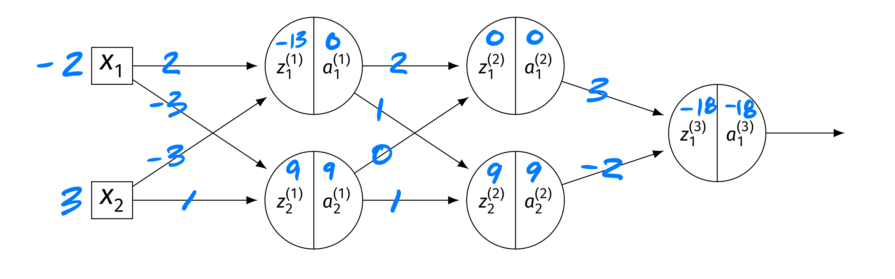
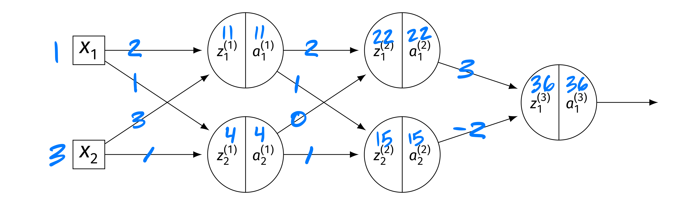

Problems tagged with "quiz-07"
Problem #142
Tags: quiz-07, backpropagation, lecture-13, neural networks
Consider a neural network \(H(\vec x)\) shown below:

Assume that all hidden nodes use ReLU activation functions, that the output node uses a linear activation, and that there are no biases.
Let the weights of the second layer of the network be: \( W^{(2)} = \begin{pmatrix} 5 & 1 \\ 1 & 2 \end{pmatrix}. \) In addition, suppose it is known that, when the network is evaluated at \(\vec x\) with weight vector \(\vec w\):
Part 1)
What is \(\partial H / \partial a_{1}^{(1)}\), as a number?
Solution
\(\dfrac{\partial H}{\partial a_1^{(1)}} = \sum_k W_{1k}^{(2)}\dfrac{\partial H}{\partial z_k^{(2)}} = 5(-3) + 1(1) = -14\).
Part 2)
What is \(\partial H / \partial a_{2}^{(1)}\), as a number?
Solution
\(\dfrac{\partial H}{\partial a_2^{(1)}} = \sum_k W_{2k}^{(2)}\dfrac{\partial H}{\partial z_k^{(2)}} = 1(-3) + 2(1) = -1\).
Part 3)
What is \(\partial H / \partial z_{1}^{(1)}\), as a number?
Solution
\(\dfrac{\partial H}{\partial z_1^{(1)}} = \dfrac{\partial H}{\partial a_1^{(1)}}\cdot g'(z_1^{(1)}) = -14 \cdot g'(3) = -14 \cdot 1 = -14\).
Part 4)
What is \(\partial H / \partial z_{2}^{(1)}\), as a number?
Solution
\(\dfrac{\partial H}{\partial z_2^{(1)}} = \dfrac{\partial H}{\partial a_2^{(1)}}\cdot g'(z_2^{(1)}) = -1 \cdot g'(-2) = -1 \cdot 0 = 0\).
Part 5)
What is \(\partial H / \partial W_{11}^{(2)}\), as a number?
Solution
\(\dfrac{\partial H}{\partial W_{11}^{(2)}} = a_1^{(1)}\cdot\dfrac{\partial H}{\partial z_1^{(2)}} = \text{ReLU}(3) \cdot(-3) = 3(-3) = -9\).
Part 6)
What is \(\partial H / \partial W_{21}^{(2)}\), as a number?
Solution
\(\dfrac{\partial H}{\partial W_{21}^{(2)}} = a_2^{(1)}\cdot\dfrac{\partial H}{\partial z_1^{(2)}} = \text{ReLU}(-2) \cdot(-3) = 0(-3) = 0\).
Problem #143
Tags: quiz-07, backpropagation, lecture-13, neural networks
Consider a neural network \(H(\vec x)\) shown below:

Assume that all hidden nodes use ReLU activation functions, that the output node uses a linear activation, and that there are no biases.
Let the weights of the second layer of the network be: \( W^{(2)} = \begin{pmatrix} 3 & -1 \\ -1 & 2 \end{pmatrix}. \) In addition, suppose it is known that, when the network is evaluated at \(\vec x\) with weight vector \(\vec w\):
Part 1)
What is \(\partial H / \partial a_{1}^{(1)}\), as a number?
Solution
\(\dfrac{\partial H}{\partial a_1^{(1)}} = \sum_k W_{1k}^{(2)}\dfrac{\partial H}{\partial z_k^{(2)}} = 3(-1) + (-1)(2) = -5\).
Part 2)
What is \(\partial H / \partial a_{2}^{(1)}\), as a number?
Solution
\(\dfrac{\partial H}{\partial a_2^{(1)}} = \sum_k W_{2k}^{(2)}\dfrac{\partial H}{\partial z_k^{(2)}} = (-1)(-1) + 2(2) = 5\).
Part 3)
What is \(\partial H / \partial z_{1}^{(1)}\), as a number?
Solution
\(\dfrac{\partial H}{\partial z_1^{(1)}} = -5 \cdot g'(2) = -5 \cdot 1 = -5\).
Part 4)
What is \(\partial H / \partial z_{2}^{(1)}\), as a number?
Solution
\(\dfrac{\partial H}{\partial z_2^{(1)}} = 5 \cdot g'(4) = 5 \cdot 1 = 5\).
Part 5)
What is \(\partial H / \partial W_{11}^{(2)}\), as a number?
Solution
\(\dfrac{\partial H}{\partial W_{11}^{(2)}} = a_1^{(1)}\cdot\dfrac{\partial H}{\partial z_1^{(2)}} = \text{ReLU}(2) \cdot(-1) = -2\).
Part 6)
What is \(\partial H / \partial W_{21}^{(2)}\), as a number?
Solution
\(\dfrac{\partial H}{\partial W_{21}^{(2)}} = a_2^{(1)}\cdot\dfrac{\partial H}{\partial z_1^{(2)}} = \text{ReLU}(4) \cdot(-1) = -4\).
Problem #144
Tags: quiz-07, backpropagation, lecture-13, neural networks
Consider a neural network \(H(\vec x)\) shown below:

Suppose that the ReLU is used on all hidden nodes, and the linear activation is used on the output node. There are no biases.
Fill in the blank without making reference to any derivatives (apart from \(g'\), which is the derivative of the ReLU):
Solution
The blank is: \(W_{22}^{(2)}\, g'(z_2^{(2)}) \, W_{21}^{(3)}\).
The weight \(W_{12}^{(1)}\) feeds into node 2 of layer 1, which connects to both nodes of layer 2 via \(W_{21}^{(2)}\) and \(W_{22}^{(2)}\). Each of those paths then continues to the output through \(W_{11}^{(3)}\) and \(W_{21}^{(3)}\), respectively.
Problem #145
Tags: quiz-07, backpropagation, lecture-13, neural networks
Consider a neural network \(H(\vec x)\) shown below:

Suppose that the ReLU is used on all hidden nodes, and the linear activation is used on the output node. There are no biases.
Fill in the blank without making reference to any derivatives (apart from \(g'\), which is the derivative of the ReLU):
Solution
The blank is: \(W_{12}^{(1)}\, g'(z_2^{(1)}) \, W_{21}^{(2)}\).
\(x_1\) feeds into both hidden nodes via \(W_{11}^{(1)}\) and \(W_{12}^{(1)}\). Each hidden node connects to the output. The full derivative is a sum over all paths from \(x_1\) to \(H\):
Problem #146
Tags: quiz-07, neural networks, lecture-13, activation functions, backpropagation
Suppose a deep network \(H(\vec x)\) uses a sigmoid activation in its output layer. Suppose as well that for a given input, \(\vec x\), \(H(\vec x) \approx 1\).
True or False: evaluated at this point \(\vec x\), \(\partial H / \partial W_{ij}^{(\ell)}\approx 0\) for all \(i, j, \ell\).
Solution
True.
The sigmoid function \(\sigma(z) = 1/(1 + e^{-z})\) satisfies \(\sigma'(z) = \sigma(z)(1 - \sigma(z))\). When \(H(\vec x) \approx 1\), the output of the sigmoid is near 1, so \(\sigma'(z) \approx 1 \cdot 0 = 0\).
Since every partial derivative \(\partial H / \partial W_{ij}^{(\ell)}\) includes the factor \(\sigma'(z^{(\text{out})})\)(by the chain rule through the output node), all partial derivatives are approximately zero.
Problem #147
Tags: quiz-07, neural networks, lecture-13, activation functions, backpropagation
Suppose a deep network \(H(\vec x)\) uses a ReLU activation in its output layer. Suppose as well that for a given input, \(\vec x\), \(H(\vec x) \approx 1\).
True or False: evaluated at this point \(\vec x\), \(\partial H / \partial W_{ij}^{(\ell)} = 0\) for all \(i, j, \ell\).
Solution
False.
Since \(H(\vec x) \approx 1 > 0\), the output of the ReLU is in the linear region where \(g'(z) = 1\). The output activation does not zero out the gradient, and the partial derivatives need not be zero.
Problem #148
Tags: quiz-07, backpropagation, lecture-13, neural networks
Suppose that the square loss is used to train a neural network \(H\) so that the empirical risk is
Each training point \((\vec x^{(i)}, y_i)\) contributes to the gradient of \(R\).
What is the contribution of the point \((\vec{x}^{(1)}, y^{(1)})\) to the gradient of \(R\) if \(H(\vec{x}^{(1)}; \vec{w}) = 1\) and \(y^{(1)} = 1\)?
Solution
\(0\).
The contribution of point \((\vec x^{(1)}, y^{(1)})\) to the gradient involves the factor \((H(\vec x^{(1)}; \vec w) - y^{(1)}) = 1 - 1 = 0\). Since this factor is zero, the entire contribution to the gradient from this point is zero.
Problem #149
Tags: quiz-07, backpropagation, lecture-13, neural networks
Consider the neural network shown below.

Assume that \(g\) is the activation function for the hidden layers, and that the output layer uses a linear activation. There are no biases. Here \(W^{(\ell)}\) denotes the weight matrix connecting layer \(\ell - 1\) to layer \(\ell\).
Part 1)
True or False: \(\dfrac{\partial H}{\partial z_1^{(2)}} = W_{11}^{(3)}\, g'(z_1^{(2)})\).
Solution
True. The output is \(H = z_1^{(3)}\)(linear activation), and \(z_1^{(3)} = W_{11}^{(3)} a_1^{(2)} + W_{21}^{(3)} a_2^{(2)}\). Since \(a_1^{(2)} = g(z_1^{(2)})\): \(\frac{\partial H}{\partial z_1^{(2)}} = W_{11}^{(3)}\cdot g'(z_1^{(2)})\).
Part 2)
True or False: \(\dfrac{\partial H}{\partial W_{21}^{(2)}} = W_{11}^{(3)}\, g'(z_1^{(2)}) \, a_2^{(1)}\).
Solution
True. By the chain rule, \(\frac{\partial H}{\partial W_{21}^{(2)}} = \frac{\partial H}{\partial z_1^{(2)}}\cdot\frac{\partial z_1^{(2)}}{\partial W_{21}^{(2)}}\). Since \(z_1^{(2)} = W_{11}^{(2)} a_1^{(1)} + W_{21}^{(2)} a_2^{(1)}\), we have \(\frac{\partial z_1^{(2)}}{\partial W_{21}^{(2)}} = a_2^{(1)}\). Thus \(\frac{\partial H}{\partial W_{21}^{(2)}} = W_{11}^{(3)}\, g'(z_1^{(2)}) \, a_2^{(1)}\).
Part 3)
True or False: \(\dfrac{\partial H}{\partial a_{2}^{(1)}} = W_{11}^{(3)}\, g'(z_1^{(2)}) \, W_{21}^{(2)}\).
Solution
False. The correct expression has two terms (one for each node in layer 2):
The given expression only includes the first term.
Problem #150
Tags: quiz-07, backpropagation, lecture-13, neural networks
Consider the neural network shown below, now with weights and inputs. Assume that the ReLU is the activation function for the hidden layers, and that the output layer uses a linear activation. There are no biases.

The blue numbers on the edges denote the weights, and the blue numbers above the \(z\)'s and \(a\)'s denote their values. Specifically: \(\vec x = (-2, 3)^T\). Layer 1: \(z_1^{(1)} = -13\), \(a_1^{(1)} = 0\); \(z_2^{(1)} = 9\), \(a_2^{(1)} = 9\). Layer 2: \(z_1^{(2)} = 0\), \(a_1^{(2)} = 0\); \(z_2^{(2)} = 0\), \(a_2^{(2)} = 0\).
True or False: \(\partial H / \partial W_{ij}^{(\ell)} = 0\) for all \(i, j, \ell\).
Solution
True.
Since \(z_1^{(2)} = 0\) and \(z_2^{(2)} = 0\), we have \(g'(z_1^{(2)}) = 0\) and \(g'(z_2^{(2)}) = 0\)(treating \(g'(0) = 0\) for ReLU). This means \(\partial H / \partial z_k^{(2)} = 0\) for \(k = 1, 2\), blocking all gradient flow through layer 2.
Additionally, \(a_1^{(2)} = a_2^{(2)} = 0\), so derivatives of \(H\) with respect to the output layer weights are also zero (since they involve multiplication by \(a_k^{(2)}\)).
Since every path from any weight to the output passes through either a dead ReLU node or a zero activation, all partial derivatives are zero.
Problem #151
Tags: quiz-07, backpropagation, lecture-13, neural networks
Consider the neural network shown below, now with different weights and inputs. Assume that the ReLU is the activation function for the hidden layers, and that the output layer uses a linear activation. There are no biases.

The blue numbers on the edges denote the weights, and the blue numbers above the \(z\)'s and \(a\)'s denote their values. The weight matrices are:
The input is \(\vec x = (1, 3)^T\). The intermediate values are: Layer 1: \(z_1^{(1)} = 11\), \(a_1^{(1)} = 11\); \(z_2^{(1)} = 4\), \(a_2^{(1)} = 4\). Layer 2: \(z_1^{(2)} = 22\), \(a_1^{(2)} = 22\); \(z_2^{(2)} = 15\), \(a_2^{(2)} = 15\). Output: \(H(\vec x) = 36\).
Compute each of the following:
Part 1)
\(\partial H / \partial z_1^{(2)}\)
Solution
The output is \(H = W_{11}^{(3)} a_1^{(2)} + W_{21}^{(3)} a_2^{(2)}\)(linear output). So \(\partial H / \partial a_1^{(2)} = W_{11}^{(3)} = 3\). Since \(z_1^{(2)} = 22 > 0\), \(g'(z_1^{(2)}) = 1\). Thus:
Part 2)
\(\partial H / \partial a_2^{(1)}\)
Solution
We need \(\partial H / \partial z_k^{(2)}\) for both nodes: \(\partial H / \partial z_1^{(2)} = 3\)(from part (a)), and \(\partial H / \partial z_2^{(2)} = W_{21}^{(3)}\cdot g'(15) = (-2)(1) = -2\). Then:
Part 3)
\(\partial H / \partial W_{11}^{(1)}\)
Solution
First, \(\frac{\partial H}{\partial a_1^{(1)}} = \frac{\partial H}{\partial z_1^{(2)}} W_{11}^{(2)} + \frac{\partial H}{\partial z_2^{(2)}} W_{12}^{(2)} = 3(2) + (-2)(1) = 4\). Since \(g'(z_1^{(1)}) = g'(11) = 1\): \(\frac{\partial H}{\partial z_1^{(1)}} = 4 \cdot 1 = 4\). Finally:
Problem #152
Tags: vanishing gradients, quiz-07, lecture-14, neural networks
Which of the following best describes the vanishing gradient problem that can occur while training deep neural networks using backpropagation?
Solution
Partial derivatives of parameters in layers far from the output become very small.
During backpropagation, the chain rule multiplies many factors together as the gradient propagates from the output back through each layer. If these factors are small (e.g., because of sigmoid activations whose derivatives are at most \(1/4\)), the product shrinks exponentially with depth. This means that parameters in early layers (far from the output) receive very small gradient updates and learn very slowly.
Problem #153
Tags: quiz-07, backpropagation, lecture-13, neural networks
Suppose \(H\) is a fully-connected neural network with 3 input features, 4 nodes in the first hidden layer, 2 nodes in the second hidden layer, and a single output node. Assume that all hidden and output nodes have a bias.
The gradient of \(H\) with respect to the parameters is a vector. What is this vector's dimensionality?
Solution
\(29\).
We count the number of weights and biases in each layer. Layer 1 (\(3 \to 4\)): \(3 \times 4 = 12\) weights \(+ \; 4\) biases \(= 16\). Layer 2 (\(4 \to 2\)): \(4 \times 2 = 8\) weights \(+ \; 2\) biases \(= 10\). Output (\(2 \to 1\)): \(2 \times 1 = 2\) weights \(+ \; 1\) bias \(= 3\). Total: \(16 + 10 + 3 = 29\).
Problem #154
Tags: quiz-07, backpropagation, lecture-13, neural networks
Suppose \(H\) is a fully-connected neural network with 2 input features, 5 nodes in the first hidden layer, 3 nodes in the second hidden layer, and a single output node. Assume that all hidden and output nodes have a bias.
The gradient of \(H\) with respect to the parameters is a vector. What is this vector's dimensionality?
Solution
\(37\).
We count the number of weights and biases in each layer. Layer 1 (\(2 \to 5\)): \(2 \times 5 = 10\) weights \(+ \; 5\) biases \(= 15\). Layer 2 (\(5 \to 3\)): \(5 \times 3 = 15\) weights \(+ \; 3\) biases \(= 18\). Output (\(3 \to 1\)): \(3 \times 1 = 3\) weights \(+ \; 1\) bias \(= 4\). Total: \(15 + 18 + 4 = 37\).
Problem #155
Tags: vanishing gradients, quiz-07, lecture-14, neural networks
True or False: one solution to the vanishing gradient problem is to increase the learning rate \(\eta\).
Solution
False.
Increasing the learning rate does not fix the vanishing gradient problem. Vanishing gradients arise because, during backpropagation, the chain rule multiplies many small factors together, causing gradients in early layers to shrink exponentially with depth. Increasing \(\eta\) scales all gradient updates equally, so the relative imbalance between layers remains: early-layer gradients are still exponentially smaller than later-layer gradients.
Actual solutions to the vanishing gradient problem include using ReLU activations (whose derivatives are \(0\) or \(1\), rather than always small), skip connections, and batch normalization.
Problem #156
Tags: gradient descent, quiz-07, lecture-14
Recall that the gradient of the square loss at a single data point \((\vec x, y)\) is:
Suppose you are running gradient descent to minimize the empirical risk with respect to the squared loss in order to train a function \(H(x) = w_0 + w_1 x\) on the following data set: \((x, y) \in\{(1, 3),\;(2, 3),\;(3, 6)\}\).
Suppose that the initial weight vector is \(\vec w = (0, 0)^T\) and that the learning rate \(\eta = 1/2\). What will be the weight vector after one iteration of gradient descent?
Solution
\((4, 9)^T\).
To perform gradient descent, we need to compute the gradient of the risk. The main thing to remember is that the gradient of the risk is the average of the gradient of the loss on each data point.
So to start this problem, calculate the gradient of the loss for each of the three points. Our formula for the gradient of the squared loss tells us to compute \(2(\Aug(\vec x) \cdot\vec w - y) \Aug(\vec x)\) for each point.
Now, the initial weight vector \(\vec w\) was conveniently chosen to be \(\vec 0\), meaning that \(\operatorname{Aug}(\vec x) \cdot\vec w = 0\) for all of our data points. Therefore, when we compute \(\operatorname{Aug}(\vec x) \cdot\vec w - y\), we get \(-y\) for every data point. The gradient of the loss at each of the three data points is:
Point \((1, 3)\): \(2(0 - 3)(1, 1)^T = (-6, -6)^T\) Point \((2, 3)\): \(2(0 - 3)(1, 2)^T = (-6, -12)^T\) Point \((3, 6)\): \(2(0 - 6)(1, 3)^T = (-12, -36)^T\) This means that the gradient of the risk is the average of these three:
The gradient descent update rule says that \(\vec w^{(1)} = \vec w^{(0)} - \eta\nabla R(\vec w^{(0)})\). The learning rate \(\eta\) was given as \(1/2\), so we have:
Problem #157
Tags: gradient descent, quiz-07, lecture-14
Recall that the gradient of the squared loss at a single data point \((\vec x, y)\) is:
Suppose you are running stochastic gradient descent to minimize the empirical risk with respect to the squared loss in order to train a function \(H(x) = w_0 + w_1 x\) on the following data set: \((x, y) \in\{(1, 2),\;(3, 5),\;(2, 1),\;(4, 4),\;(5, 8)\}\).
Suppose that the initial weight vector is \(\vec w = (0, 0)^T\), the learning rate is \(\eta = 1/2\), and the mini-batch size is 2. If the first mini-batch consists of the 1st and 4th data points, what will be the weight vector after one iteration of stochastic gradient descent?
Solution
\((3, 9)^T\).
Stochastic gradient descent works like gradient descent, but instead of computing the gradient of the risk over the entire data set, we compute the gradient over a mini-batch --- a small, randomly-chosen subset of the data. The gradient of the risk on the mini-batch is the average of the gradient of the loss on each point in the mini-batch.
The mini-batch consists of the 1st and 4th data points: \((1, 2)\) and \((4, 4)\). We compute the gradient of the squared loss at each of these points using \(2(\Aug(\vec x) \cdot\vec w - y) \Aug(\vec x)\).
Since \(\vec w = \vec 0\), we have \(\Aug(\vec x) \cdot\vec w = 0\) for both points.
Point \((1, 2)\): \(2(0 - 2)(1, 1)^T = (-4, -4)^T\) Point \((4, 4)\): \(2(0 - 4)(1, 4)^T = (-8, -32)^T\) The gradient of the risk on the mini-batch is the average:
Applying the update rule \(\vec w^{(1)} = \vec w^{(0)} - \eta\nabla R(\vec w^{(0)})\) with \(\eta = 1/2\):
Problem #158
Tags: quiz-07, SGD, neural networks, gradient descent, lecture-14
True or False: in stochastic gradient descent, each update step moves in the direction of steepest descent of the empirical risk.
Solution
False.
Each update step moves in the direction of steepest descent of the risk computed on the mini-batch, not the full training set. The mini-batch gradient is only an approximation of the true gradient of the empirical risk. This is what makes each iteration of SGD fast --- computing the gradient over a small mini-batch of \(m\) points is much cheaper than computing it over all \(n\) points --- but it means that the update direction is noisy.
Problem #159
Tags: quiz-07, SGD, neural networks, gradient descent, lecture-14
True or False: stochastic gradient descent generally requires fewer iterations than gradient descent to converge.
Solution
False.
SGD typically requires more iterations than gradient descent to converge, because each update uses a noisy approximation of the true gradient. However, each iteration of SGD is much cheaper (\(O(md)\) vs. \(O(nd)\) for a mini-batch of size \(m \ll n\)), so SGD often converges faster in terms of total computation time.
Problem #160
Tags: gradient descent, quiz-07, lecture-14, neural networks
True or False: if two neural networks have the same architecture but different random initializations, they are guaranteed to converge to the same solution when trained with gradient descent on the same data.
Solution
False.
The loss surface of a neural network is non-convex, meaning it has many local minima. Different random initializations place the starting point at different locations on this surface, so gradient descent can follow different paths and converge to different local minima. This is one reason why initialization matters in practice.